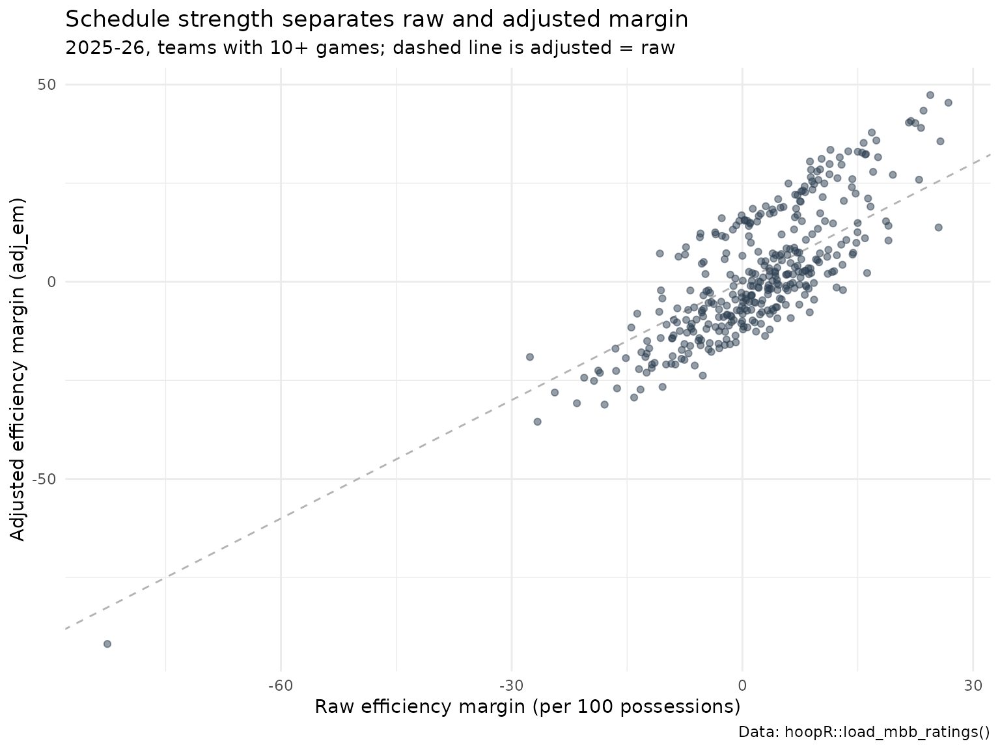

College Basketball Team Ratings Model: Opponent-Adjusted Efficiency for NCAA Men's Teams
Saiem Gilani
Source:vignettes/articles/college-basketball-team-ratings-model.Rmd
college-basketball-team-ratings-model.RmdA team that wins by 20 against the weakest schedule in the
country has not shown what a team that wins by 20 against the strongest
has. Opponent-adjusted efficiency ratings correct for that:
each team’s offense is measured against the defenses it faced, and its
defense against the offenses. load_mbb_ratings() returns
the SportsDataverse’s adjusted ratings for every men’s college team and
season since 2006, in the spirit of KenPom and Bart Torvik’s T-Rank.
This article explains what the ratings estimate, how they are computed
and checked, and how to use them.
The official model card is ratings.md
in the hoopR-mbb-data repository. Numbers below are
computed in this article from the published release unless labeled “as
reported in the model card”.
What does the dataset contain?
One row per team and season:
| Column | Meaning |
|---|---|
adj_o |
Adjusted offensive efficiency: points scored per 100 possessions against an average defense. |
adj_d |
Adjusted defensive efficiency: points allowed per 100 possessions against an average offense. Lower is better. |
adj_em |
Adjusted efficiency margin, adj_o - adj_d: points per
100 possessions better than an average team. |
adj_tempo |
Adjusted possessions per 40 minutes. |
raw_o, raw_d
|
Unadjusted points scored and allowed per 100 possessions. |
games, rank, adj_em_z
|
Games played, national rank by adj_em, and
adj_em as a z-score within the season. |
team_id is the ESPN team id, the same key as
load_mbb_team_box() and
load_mbb_schedule().
How are the ratings computed?
As described in the model card, the engine is an iterative opponent adjustment: a fixed-point solve, on the efficiency-margin scale, over the season’s game matrix. In outline, a solver of this kind works like this:
- Start from each team’s raw offensive and defensive efficiency in every game (points per 100 possessions).
- Adjust each game’s offensive efficiency for the opponent’s current defensive rating, and vice versa, relative to the league average.
- Average the adjusted game values into new team ratings, and repeat until the ratings stop changing (the fixed point).
Tempo is adjusted the same way. The “features” are the game results themselves and the attribution is the published offense/defense split; there is no hidden model to explain. Ratings are recomputed from scratch on every run, so corrections to the underlying play-by-play and box scores flow through automatically.
Loading and exploring the ratings
library(hoopR)
library(dplyr)
library(ggplot2)
ratings <- load_mbb_ratings(seasons = 2006:2026) |>
mutate(team_id = as.character(team_id))
team_names <- load_mbb_team_box(seasons = 2026) |>
distinct(team_id = as.character(team_id), team = team_display_name)
ratings |>
group_by(season) |>
summarise(
teams = n(),
teams_10plus_games = sum(games >= 10),
mean_adj_em_all = round(mean(adj_em, na.rm = TRUE), 2),
mean_adj_em_core = round(mean(adj_em[games >= 10], na.rm = TRUE), 2)
) |>
tail(8)
#> # A tibble: 8 × 5
#> season teams teams_10plus_games mean_adj_em_all mean_adj_em_core
#> <int> <int> <int> <dbl> <dbl>
#> 1 2019 652 353 -20.2 1.28
#> 2 2020 658 353 -21.3 1.88
#> 3 2021 493 348 -11.5 0.09
#> 4 2022 679 360 -22.2 1.24
#> 5 2023 706 363 -23.4 1.68
#> 6 2024 717 362 -24.0 1.7
#> 7 2025 700 365 -24.6 1.65
#> 8 2026 727 366 -25.8 1.72The full frame includes every opponent any Division I team played, including non-Division I teams with one or two games, which pulls the overall mean far below zero. The core (teams with 10 or more games) sits near zero, as an average-relative scale should.
Raw versus adjusted
core_2026 <- ratings |>
filter(season == 2026, games >= 10) |>
mutate(raw_em = raw_o - raw_d) |>
left_join(team_names, by = "team_id")
c(
core_teams = nrow(core_2026),
cor_adj_em_raw_em = round(cor(core_2026$adj_em, core_2026$raw_em), 3),
cor_adj_em_z = round(cor(core_2026$adj_em, core_2026$adj_em_z), 3)
)
#> core_teams cor_adj_em_raw_em cor_adj_em_z
#> 366.000 0.808 1.000
ggplot(core_2026, aes(raw_em, adj_em)) +
geom_abline(colour = "grey70", linetype = "dashed") +
geom_point(alpha = 0.5, colour = "#2C3D50") +
labs(
title = "Schedule strength separates raw and adjusted margin",
subtitle = "2025-26, teams with 10+ games; dashed line is adjusted = raw",
x = "Raw efficiency margin (per 100 possessions)",
y = "Adjusted efficiency margin (adj_em)",
caption = "Data: hoopR::load_mbb_ratings()"
) +
theme_minimal()
Teams above the dashed line played schedules tougher than average and are rated better than their raw margin; teams below it padded their numbers against weak opponents.
How are the ratings checked?
The level gate
A rank correlation against another rating system (Spearman’s rho)
cannot see a scale error: multiply every rating by 100 and the ranks do
not move. So, as described in the model card, the publish path carries
an absolute level gate beside the engine’s rank checks.
Over the core teams (10+ games, applied once 150 teams qualify), each
season’s mean adj_o, adj_d,
adj_em, adj_tempo and the standard deviation
of adj_em must sit inside fixed bands, and no rating may be
missing or infinite. Here it is re-run on the assets the loader
returns:
bands <- list(adj_o = c(95, 118), adj_d = c(95, 118), adj_em = c(-8, 8),
adj_tempo = c(60, 76), sd_adj_em = c(10, 22))
gate <- ratings |>
filter(games >= 10) |>
group_by(season) |>
summarise(
core_teams = n(),
non_finite = sum(!is.finite(adj_em) | !is.finite(adj_o) | !is.finite(adj_d)),
mean_adj_o = mean(adj_o), mean_adj_d = mean(adj_d), mean_adj_em = mean(adj_em),
mean_adj_tempo = mean(adj_tempo), sd_adj_em = sd(adj_em)
) |>
mutate(
pass = core_teams < 150 | (
non_finite == 0 &
between(mean_adj_o, bands$adj_o[1], bands$adj_o[2]) &
between(mean_adj_d, bands$adj_d[1], bands$adj_d[2]) &
between(mean_adj_em, bands$adj_em[1], bands$adj_em[2]) &
between(mean_adj_tempo, bands$adj_tempo[1], bands$adj_tempo[2]) &
between(sd_adj_em, bands$sd_adj_em[1], bands$sd_adj_em[2])
)
)
gate |>
mutate(across(starts_with(c("mean", "sd")), \(x) round(x, 2))) |>
print(n = Inf, width = Inf)
#> # A tibble: 21 × 9
#> season core_teams non_finite mean_adj_o mean_adj_d mean_adj_em mean_adj_tempo
#> <int> <int> <int> <dbl> <dbl> <dbl> <dbl>
#> 1 2006 334 0 102. 102. 0.14 67.3
#> 2 2007 336 0 103. 102. 0.33 67.1
#> 3 2008 342 0 102. 102. 0.16 67.4
#> 4 2009 345 0 102. 102. 0.29 66.8
#> 5 2010 347 0 103. 102. 0.54 67.2
#> 6 2011 346 0 103. 102. 0.65 66.8
#> 7 2012 345 0 102. 102. 0.63 66.2
#> 8 2013 347 0 102. 101. 0.67 66.0
#> 9 2014 351 0 106. 105. 1 66.7
#> 10 2015 351 0 104. 103. 0.98 65.1
#> 11 2016 351 0 105. 104. 0.93 69.2
#> 12 2017 350 0 105. 104. 1.09 69.6
#> 13 2018 351 0 106. 104. 1.29 69.6
#> 14 2019 353 0 105. 103. 1.28 69.3
#> 15 2020 353 0 103. 101. 1.88 69.3
#> 16 2021 348 0 102. 102. 0.09 69.5
#> 17 2022 360 0 103. 102. 1.24 68.4
#> 18 2023 363 0 105. 103. 1.68 68.2
#> 19 2024 362 0 107. 105. 1.7 68.6
#> 20 2025 365 0 108. 106. 1.65 68.2
#> 21 2026 366 0 110. 109. 1.72 68.5
#> sd_adj_em pass
#> <dbl> <lgl>
#> 1 13.5 TRUE
#> 2 14.6 TRUE
#> 3 14.5 TRUE
#> 4 14.0 TRUE
#> 5 14.8 TRUE
#> 6 14.1 TRUE
#> 7 13.8 TRUE
#> 8 14.1 TRUE
#> 9 13.9 TRUE
#> 10 14.1 TRUE
#> 11 14.1 TRUE
#> 12 14.2 TRUE
#> 13 13.8 TRUE
#> 14 13.8 TRUE
#> 15 13.5 TRUE
#> 16 15.4 TRUE
#> 17 14.3 TRUE
#> 18 13.2 TRUE
#> 19 14.1 TRUE
#> 20 15.7 TRUE
#> 21 16.5 TRUE21 of 21 published seasons pass the gate on the current release. The
model card notes that an earlier 2011 asset failed to converge (every
rating missing), which is exactly the failure the finiteness check
refuses; the table above reflects whatever the release holds today. The
bands catch the errors a rank check misses: a per-game instead of
per-100 scale divides every level by about 1.5, and a sign flip mirrors
adj_em.
Program stickiness
Programs persist even when rosters do not, so a team’s rating should carry over strongly from one season to the next:
ratings |>
filter(games >= 10) |>
select(team_id, season, adj_em) |>
inner_join(ratings |> filter(games >= 10) |>
transmute(team_id, season = season - 1, adj_em_next = adj_em),
by = c("team_id", "season")) |>
filter(is.finite(adj_em), is.finite(adj_em_next)) |>
group_by(season) |>
summarise(teams = n(), yoy_r = round(cor(adj_em, adj_em_next), 3)) |>
tail(8)
#> # A tibble: 8 × 3
#> season teams yoy_r
#> <dbl> <int> <dbl>
#> 1 2018 351 0.846
#> 2 2019 352 0.842
#> 3 2020 340 0.858
#> 4 2021 345 0.838
#> 5 2022 358 0.828
#> 6 2023 361 0.82
#> 7 2024 362 0.832
#> 8 2025 365 0.857How much of a game margin does the rating explain?
An in-sample illustration: for 2025-26 games between two core teams, compare the final margin with the difference in adjusted margins, scaled to the game’s possessions. The ratings were computed from these same games, so this is a description of fit, not a forecast test.
games_2026 <- load_mbb_team_box(seasons = 2026) |>
filter(team_home_away == "home") |>
transmute(home_id = as.character(team_id), away_id = as.character(opponent_team_id),
margin = team_score - opponent_team_score)
fit_df <- games_2026 |>
inner_join(core_2026 |> select(home_id = team_id, home_em = adj_em, home_t = adj_tempo), by = "home_id") |>
inner_join(core_2026 |> select(away_id = team_id, away_em = adj_em, away_t = adj_tempo), by = "away_id") |>
mutate(expected = (home_em - away_em) * ((home_t + away_t) / 2) / 100)
fit <- lm(margin ~ expected, data = fit_df)
c(games = nrow(fit_df), r_squared = round(summary(fit)$r.squared, 3),
home_edge_points = round(unname(coef(fit)[1]), 2))
#> games r_squared home_edge_points
#> 5762.000 0.519 2.290The intercept is the average home edge in points left over once team strength is accounted for (neutral-site games are included as “home” games here, which shrinks it slightly).
Who was best in 2025-26?
ratings |>
filter(season == 2026) |>
left_join(team_names, by = "team_id") |>
arrange(rank) |>
select(rank, team, adj_o, adj_d, adj_em, adj_tempo, games) |>
mutate(across(adj_o:adj_tempo, \(x) round(x, 1))) |>
head(25) |>
print(n = 25)
#> # A tibble: 25 × 7
#> rank team adj_o adj_d adj_em adj_tempo games
#> <int> <chr> <dbl> <dbl> <dbl> <dbl> <int>
#> 1 1 Michigan Wolverines 133. 85.5 47.4 71.7 40
#> 2 2 Duke Blue Devils 132. 86.5 45.4 66.3 38
#> 3 3 Arizona Wildcats 130. 86.8 43.4 70.8 39
#> 4 4 Illinois Fighting Illini 134. 93.7 40.8 67 37
#> 5 5 Florida Gators 130. 89.2 40.4 70.6 35
#> 6 6 Houston Cougars 127. 87.1 40.2 63.9 37
#> 7 7 Iowa State Cyclones 128. 89.1 39 67.9 37
#> 8 8 Purdue Boilermakers 135. 96.9 37.8 65.3 39
#> 9 9 UConn Huskies 126. 90 35.8 65.5 40
#> 10 10 Gonzaga Bulldogs 125. 89.1 35.6 69.7 35
#> 11 11 Michigan State Spartans 126. 90.6 35.2 67.2 35
#> 12 12 Alabama Crimson Tide 132. 99 33.5 73.7 35
#> 13 13 Tennessee Volunteers 125. 91.6 33.1 66.5 37
#> 14 14 Vanderbilt Commodores 130. 97 33 69.6 36
#> 15 15 St. John's Red Storm 124. 91.3 32.7 70.2 37
#> 16 16 Louisville Cardinals 127. 94.9 32.4 70.3 35
#> 17 17 Nebraska Cornhuskers 122. 89.6 32.3 67.6 35
#> 18 18 Virginia Cavaliers 126. 94.7 31.6 67.3 36
#> 19 19 Arkansas Razorbacks 131 99.4 31.6 72.7 37
#> 20 20 Texas Tech Red Raiders 128. 96.5 31.2 67 34
#> 21 21 Kansas Jayhawks 121. 90.3 30.5 68.8 35
#> 22 22 BYU Cougars 128. 98.7 29.9 70.7 35
#> 23 23 Iowa Hawkeyes 127. 97.6 29.7 63.3 37
#> 24 24 Wisconsin Badgers 128. 99.4 28.5 70.2 35
#> 25 25 Kentucky Wildcats 124. 95.9 28.4 68.8 36Limitations
- Early-season ratings start flat. There is no preseason prior yet, so ratings in November rest on a handful of games.
- Home court, travel and altitude are not modeled beyond what the game results imply.
-
Non-Division I opponents appear with very few games
and extreme ratings; filter on
games(10+ is a good default) before ranking or averaging. - External agreement is checked where the engine is trained. The model card describes rank gates against KenPom- and Torvik-class references in the engine’s own repository; the level gate above is the scale check at publish time.
Where to go next
- Basketball advanced metrics computes the raw efficiencies these ratings adjust.
-
College
basketball win probability model: the pregame prior in
load_mbb_pbp()is a team-rating model. - College basketball RAPM model and player value model for player-level ratings.
- KenPom example functions and CollegeBasketballData (CBD) endpoints for other rating sources.
- Reference:
load_mbb_ratings()in the Model Dataset Loaders section.